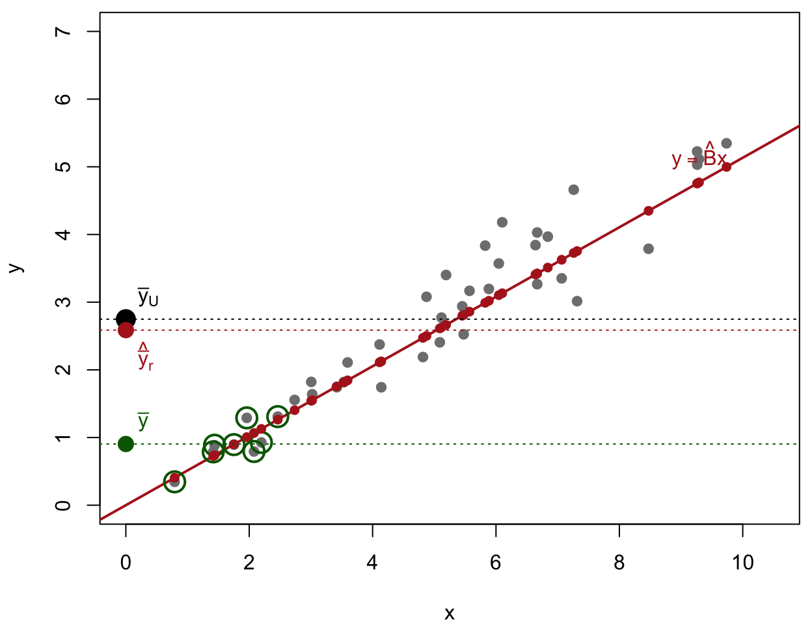
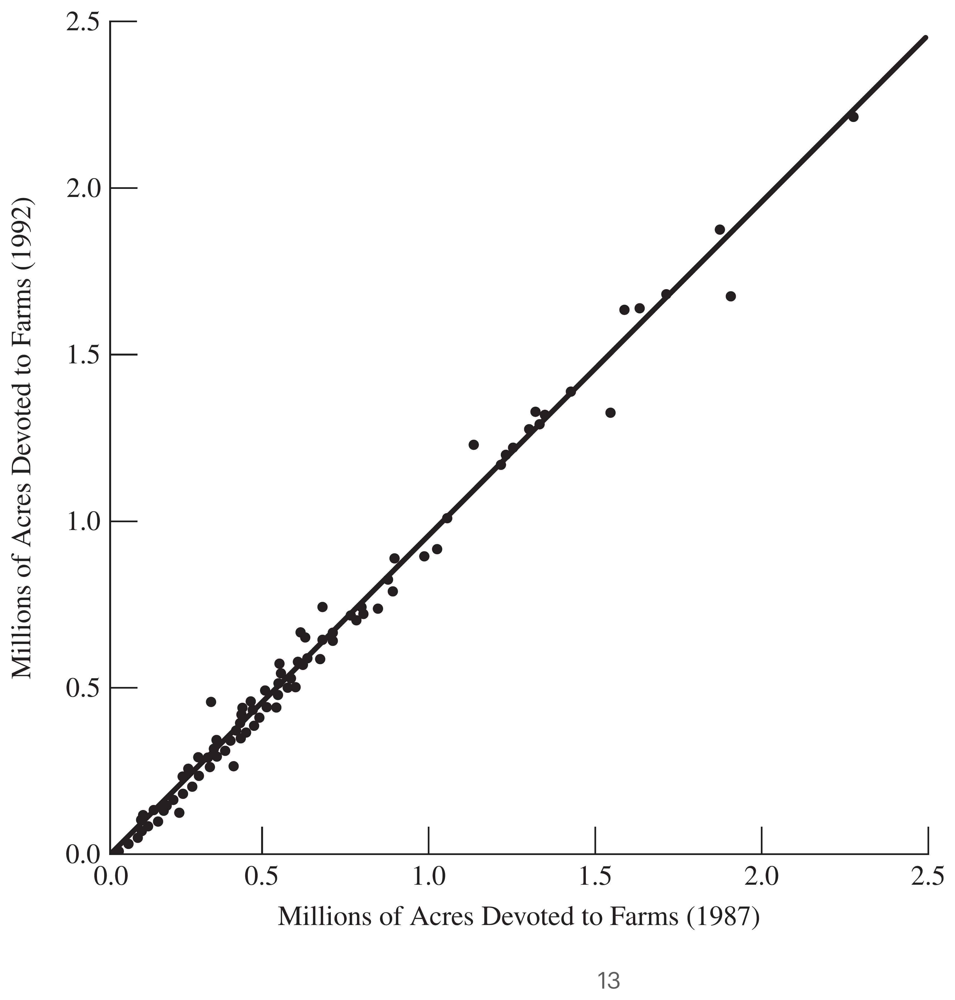
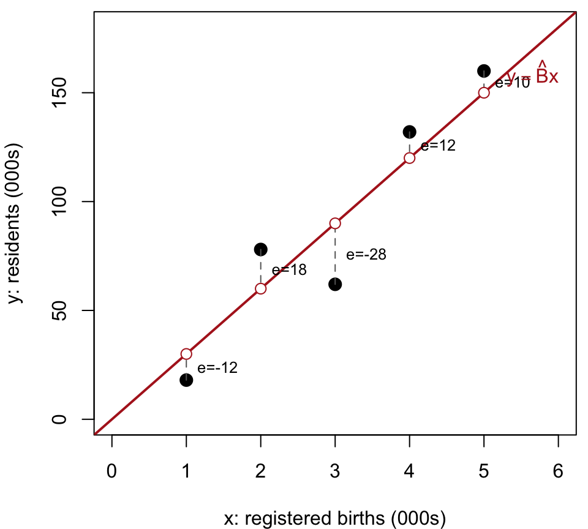
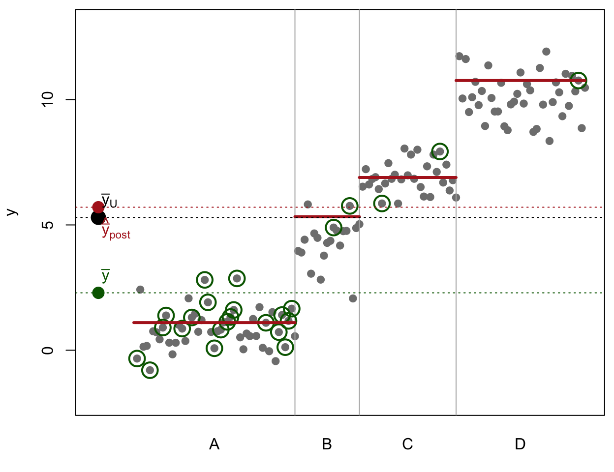
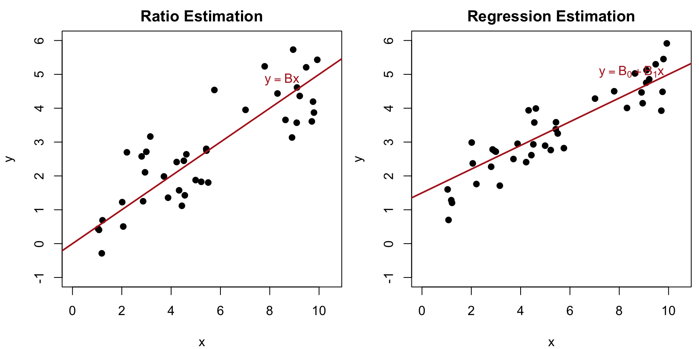
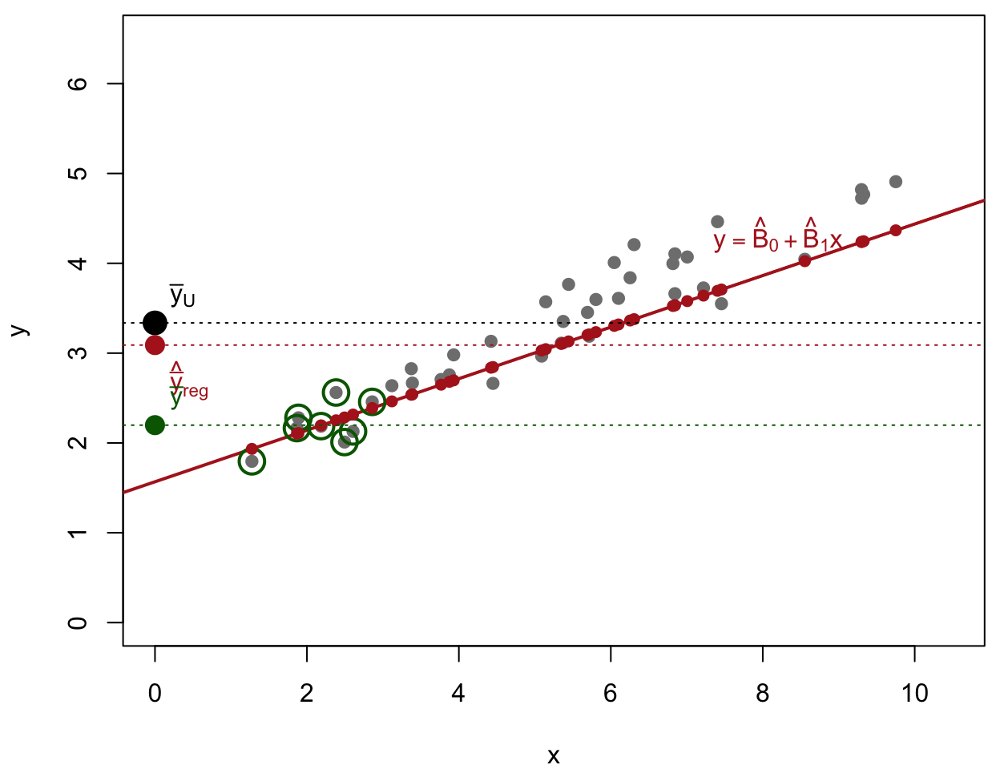
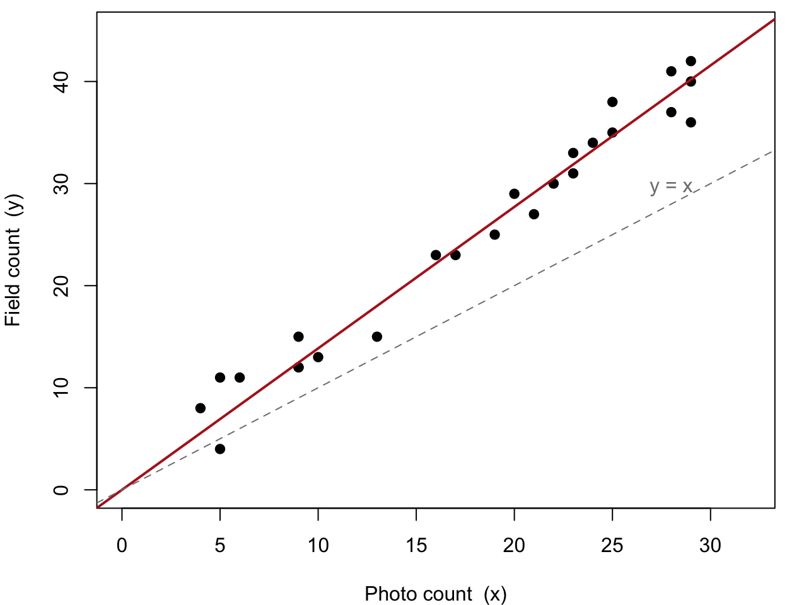
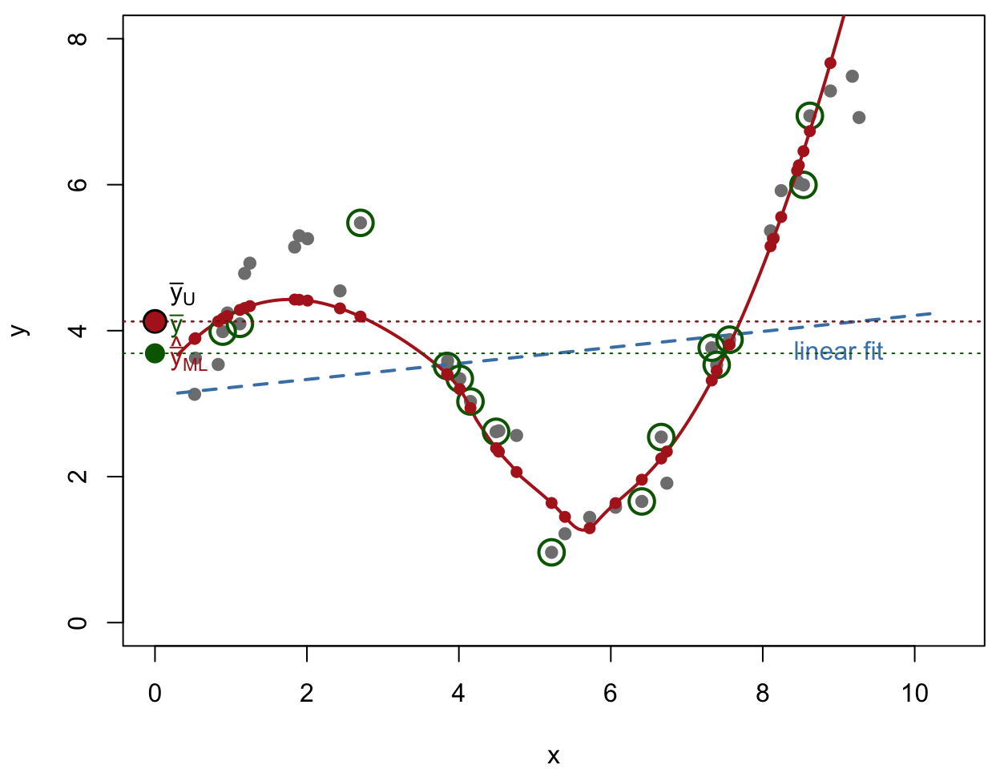

Ratio and Regression Estimation
Textbook sections:
For ratio estimation to apply, two quantities y_i and x_i must be measured on each sample unit; x_i is often called an auxiliary variable or subsidiary variable. In the population of size N, t_y = \sum_{i=1}^N y_i, \qquad t_x = \sum_{i=1}^N x_i and their ratio is B = \frac{t_y}{t_x} = \frac{\bar y_U}{\bar x_U}, \qquad \text{so that} \qquad \bar y_U = B\cdot\bar x_U.
Ratio and regression estimation both take advantage of the correlation of x and y in the population; the higher the correlation, the better they work.
If an SRS is taken, natural estimators for B, t_y, and \bar y_U are: \hat B = \frac{\bar y}{\bar x} = \frac{\hat t_y}{\hat t_x} \hat t_{yr} = \hat B\, t_x = \hat y_r \cdot N \qquad \hat{\bar y}_r = \hat B\, \bar x_U
where t_x and \bar x_U are assumed known. This is the key requirement for ratio estimation: we need to know the population total or mean of the auxiliary variable x in advance.

Grey: population (x_i known). Green: biased sample (small x only).
Red line, fit from the sample: \hat y_i=\hat Bx_i for every unit.
\hat{\bar y}_r = \frac1N\sum_{i=1}^N \hat y_i = \hat{B}\overline{x}_{U}
Once \hat B is estimated, form the fitted value \hat y_i=\hat B x_i for every unit in the population, using its known x_i. Summing (or averaging) these over the population recovers the ratio estimators: \hat t_{yr} = \sum_{i=1}^N \hat y_i = \hat B\, t_x \qquad \hat{\bar y}_r = \frac1N\sum_{i=1}^N \hat y_i = \hat B\, \bar x_{U}.
In the figure, this is the height of the red line at x=\bar x_{U}: anchoring it at the known population mean pulls the estimate back near the true \bar y_{U}, despite the sample being biased toward small x.
Ordinary SRS estimation of a mean or proportion is a special case of ratio estimation, obtained by setting x_i=1 for every unit: \bar x_U = 1, \quad \bar x = 1, \quad t_x = N B = \bar y_U, \qquad \hat B = \bar y \hat{\bar y}_r = \hat B\,\bar x = \hat B = \bar y \ \ (\text{including } \hat p) \qquad \hat t_{yr} = \hat B\, t_x = \bar y N
Let x_i = number of registered births in commune i, and y_i = number of residents in commune i. Suppose the total number of registered births in all communes is known to be t_x=1 million. \hat B = \frac{\hat t_y}{\hat t_x} = \frac{2{,}037{,}615}{71{,}866} = 28.35 \hat t_y = \hat B\, t_x = 28.35 \times 1\text{ million} = 28.35\text{ million}
Suppose the population consists of agricultural fields of different sizes. Let y_i = \text{bushels of grain harvested in field } i, \qquad x_i = \text{acreage of field } i. Then B = \text{average yield in bushels per acre}, \bar y_{U} = \text{average yield in bushels per field}, t_y = \text{total yield in bushels.}
t_x (total acreage) is usually easy to obtain from other records, even when t_y (total yield) is not — making ratio estimation attractive here.
Suppose we know the population totals for 1987, but only have information on the SRS of 300 counties for 1992. When the same quantity is measured at different times, an earlier measurement often makes an excellent auxiliary variable. Let y_i = \text{total farm acreage of county } i \text{ in 1992}, \qquad x_i = \text{total farm acreage of county } i \text{ in 1987}.
In 1987, a total of t_x = 964{,}470{,}625 acres were devoted to farms in the U.S., so \bar x_U = \frac{964{,}470{,}625}{3078} = 313{,}343.3 \text{ acres of farms per county.}
From the sample of 300 counties: \bar y = 297{,}897.0, \bar x = 301{,}953.7. \hat B = \frac{\bar y}{\bar x} = \frac{297{,}897.0}{301{,}953.7} = 0.986565 \hat{\bar y}_r = \hat B\,\bar x_U = (0.986565)(313{,}343.3) = 309{,}133.6 \hat t_{yr} = \hat B\, t_x = (0.986565)(964{,}470{,}625) = 951{,}513{,}191
Compare with the plain SRS estimate \hat t_{y,\text{SRS}} = N\bar y = 916{,}927{,}110 — quite different, since \bar x in the sample happened to be a bit smaller than the true \bar x_U.

The line goes through the origin with slope \hat B=0.9866. Note that the variability about the line increases with x — this pattern (variance proportional to x) is exactly when ratio estimation works best.
In large samples, the bias of the ratio estimator \hat{\bar y}_r is negligible relative to its variance, so \text{MSE}(\hat{\bar y}_r) \approx V(\hat{\bar y}_r). To understand the variance intuitively, look at the estimation error:
\hat{\bar y}_r - \bar y_U = \frac{\bar y}{\bar x}\bar x_U - B\bar x_U
By factoring out \frac{\bar x_U}{\bar x}, we can rewrite this error entirely in terms of the sample means:
\hat{\bar y}_r - \bar y_U = \frac{\bar x_U}{\bar x}(\bar y - B\bar x)
Define the population residual for each element as the deviation from the true population line:
d_i = y_i - Bx_i \qquad (\text{where } B = t_y/t_x)
Notice that \bar y - B\bar x is simply the sample mean of these residuals, \bar d. Therefore, the error of our estimator is just the scaled sample mean of the residuals. Squaring this and taking the expectation gives us the MSE:
\text{MSE}(\hat{\bar y}_r) \approx E\left[\Big(\frac{\bar x_U}{\bar x}\Big)^2 \bar d^2\right] \approx \Big(\frac{\bar x_U}{\bar x}\Big)^2 V(\bar d)
Because d_i are fixed population values, \bar d is just a standard sample mean, meaning its variance under Simple Random Sampling is V(\bar d) = (1 - \frac{n}{N})\frac{S_d^2}{n}.
In practice, the true population slope B is unknown, so we cannot calculate d_i or S_d^2. Instead, we substitute B with our sample estimate \hat B = \bar y / \bar x. This gives us the sample residuals from our fitted line:
e_i = y_i - \hat B x_i
Let s_e^2 = \frac{1}{n-1}\sum_{i\in\mathcal S} e_i^2 be the sample variance of these residuals. Substituting s_e^2 for the unknown S_d^2 provides the variance estimator for the ratio mean:
\hat V(\hat{\bar y}_r) = \Big(1-\frac nN\Big)\Big(\frac{\bar x_U}{\bar x}\Big)^2\frac{s_e^2}{n}
From this core formula, we can easily derive the variances for the slope and the total by recognizing their algebraic relationships (\hat B = \hat{\bar y}_r / \bar x_U and \hat t_{yr} = N\hat{\bar y}_r):
\hat V(\hat B) = \Big(1-\frac nN\Big)\frac{s_e^2}{n\bar x^2} \qquad \hat V(\hat t_{yr}) = \Big(1-\frac nN\Big)\Big(\frac{t_x}{\bar x}\Big)^2\frac{s_e^2}{n}
If sample sizes are sufficiently large (typically n > 30), the sampling distributions are approximately normal. Approximate 95% Confidence Intervals are formed using the standard multiplier:
This toy version of the France population example demonstrates ratio estimation mechanics using a sample of n=5 out of N=8 communes. We observe x_i = registered births and y_i = residents, both in thousands:
| Commune i | x_i (000s) | y_i (000s) | \hat y_i=\hat Bx_i | e_i=y_i-\hat y_i | e_i^2 |
|---|---|---|---|---|---|
| 1 | 1 | 18 | 30 | −12 | 144 |
| 2 | 2 | 78 | 60 | 18 | 324 |
| 3 | 3 | 62 | 90 | −28 | 784 |
| 4 | 4 | 132 | 120 | 12 | 144 |
| 5 | 5 | 160 | 150 | 10 | 100 |
| Sum | 15 | 450 | 450 | 0 | 1496 |
We first calculate the ratio estimate of the slope \hat B, followed by the sample residual variance s_e^2:
\hat B = \frac{\sum y_i}{\sum x_i} = \frac{450}{15} = 30 \qquad s_e^2 = \frac{\sum e_i^2}{n-1} = \frac{1496}{4} = 374

Assume the population has N=8 communes and the total number of registered births is known from administrative records to be t_x=40 (thousand). This means the true population mean is \bar x_{U}=t_x/N=5 (thousand). Our sample mean is only \bar x=3 (thousand), indicating we sampled smaller-than-average communes.
Mean: \hat{\bar y}_r=\hat B\bar x_{U}=30(5)=150 (thousand residents)
\text{SE}(\hat{\bar y}_r) = \sqrt{\Big(1-\frac{5}{8}\Big)\Big(\frac{5}{3}\Big)^2\frac{374}{5}} = 8.827
Total: \hat t_{yr}=\hat B\,t_x=30(40)=1200 (thousand), i.e. 1.2 million residents
\text{SE}(\hat t_{yr}) = \sqrt{\Big(1-\frac{5}{8}\Big)\Big(\frac{40}{3}\Big)^2\frac{374}{5}} = 70.616 \text{ (thousand)}
A 95% Confidence Interval for the total population size: 1200 \pm 1.96(70.616) = [1061.6,\ 1338.4] thousand, i.e. [1.062, 1.338] million residents.
Slope:
\text{SE}(\hat B) = \sqrt{\Big(1-\frac{5}{8}\Big)\frac{374}{5\cdot 3^2}} = 1.765
Let R be the population Pearson correlation of x and y, R = \frac{\sum_{i=1}^N (x_i-\bar x_U)(y_i-\bar y_U)}{(N-1)S_xS_y}.
Comparing \text{MSE}(\hat{\bar y}_r) with \text{MSE}(\bar y) = \big(1-\tfrac nN\big)\tfrac{S_y^2}{n} shows that \text{MSE}(\hat{\bar y}_r) \le \text{MSE}(\bar y) \quad \Longleftrightarrow \quad R \ge \frac{BS_x}{2S_y} = \frac{\text{CV}(x)}{2\,\text{CV}(y)}.
If the CVs of x and y are roughly equal, ratio estimation pays off whenever the correlation between x and y exceeds 1/2.
Analogous to R^2 for stratification, \frac{\text{MSE}(\hat{\bar y}_r)}{\text{MSE}(\bar y)} \approx \frac{S_d^2}{S_y^2} \qquad\Longrightarrow\qquad R^2 = 1 - \frac{S_d^2}{S_y^2}
Note
This is not exactly the R^2 of fitting a linear regression model y=Bx, because \hat B is not a least-squares estimate of B; however, it carries similar information about how much variance ratio estimation removes.
Sometimes a unit’s stratum is unknown until after sampling (e.g., gender before interviewing). We can still poststratify: take an SRS, sort units into strata afterward, and weight each by its known population share N_h/N.
| Stratum | N_h | n_h | Want nurse | \hat p_h |
|---|---|---|---|---|
| Female | 5000 | 300 | 150 | 0.50 |
| Male | 5000 | 100 | 10 | 0.10 |
The sample has three times as many women as men, though the population is 50/50. Ignoring this pulls \hat p_{\text{SRS}} = \frac{160}{400} = (0.5)(0.75)+(0.1)(0.25) = 0.4 toward the female (higher) rate. Weighting by the known population shares instead gives \hat p_{\text{post}} = \hat p_f\frac{N_f}{N} + \hat p_m\frac{N_m}{N} = (0.5)(0.5)+(0.1)(0.5) = 0.3 .
With H post-strata formed after an SRS of size n, contrast two weightings of the same stratum means \bar y_h, \pi_h=N_h/N: \hat{\bar y}_{\text{SRS}} = \sum_{h=1}^H \frac{n_h}{n}\,\bar y_h \qquad\text{vs.}\qquad \hat{\bar y}_{\text{post}} = \sum_{h=1}^H \pi_h\,\bar y_h .
Since n_h is random, the variance formula plugs in its expectation, n_h^{\text{post-strat}} := n\pi_h, \hat V(\hat{\bar y}_{\text{post}}) = \sum_{h=1}^H \Big(1-\frac{n_h^{\text{post-strat}}}{N_h}\Big)\pi_h^2\frac{s_h^2}{n_h^{\text{post-strat}}}
Total: \hat t_{\text{post}} = N\hat{\bar y}_{\text{post}}, \text{SE}(\hat t_{\text{post}}) = N\cdot\text{SE}(\hat{\bar y}_{\text{post}}).
Every total estimator can be read as predicting each population unit’s y_i and summing. Post-stratification predicts every unit in stratum h by that stratum’s sample mean, \hat y_i=\bar y_h for i\in\mathcal U_h: \hat t_{\text{post}} = \sum_{i\in\mathcal U}\hat y_i = \sum_{h=1}^H N_h\,\bar y_h, \qquad \hat{\bar y}_{\text{post}} = \sum_{h=1}^H \pi_h\,\bar y_h .
The naive SRS estimator instead predicts every unit by the pooled \bar y (\hat t_{\text{SRS}}=N\bar y), so an over-represented stratum drags \bar y toward its own mean; post-stratification fixes this by predicting with the right stratum mean, weighted by the correct N_h.

Grey: population, post-strata A–D (block width = N_h). Green: biased sample — 80% from A, though A is only 36% of the population.
Red segments: predictions \hat y_i=\bar y_h per stratum, giving \hat{\bar y}_{\text{post}} = \sum_{h=1}^H \pi_h\,\bar y_h .
\hat{\bar y}_{\text{post}} (red) \approx \bar y_{U} (black); the naive \bar y (green) is pulled toward A.
Nurses example (N=10{,}000, n=400): \hat p_h plays the role of \bar y_h, s_h^2=\tfrac{n_h}{n_h-1}\hat p_h(1-\hat p_h) from the realized counts, and we set n_h^{\text{post-strat}}=n\pi_h=200 in each stratum, so every fpc is 1-n/N=0.96:
| Post-stratum | N_h | \pi_h | n_h^{\text{post-strat}} | \hat p_h | s_h^2 | \pi_h\hat p_h | \hat v_h1 |
|---|---|---|---|---|---|---|---|
| Female | 5000 | 0.5 | 200 | 0.500 | 0.2508 | 0.2500 | 0.000301 |
| Male | 5000 | 0.5 | 200 | 0.100 | 0.0909 | 0.0500 | 0.000109 |
| Total | 10000 | 1.0 | 400 | 0.3000 | 0.000410 |
The post-stratified proportion matches the earlier calculation, now with a standard error: \hat p_{\text{post}} = \sum_{h} \pi_h\hat p_h = 0.300, \qquad \text{SE}(\hat p_{\text{post}}) = \sqrt{0.000410} = 0.0203, and an approximate 95% CI is 0.300 \pm 1.96(0.0203) = [0.260,\ 0.340].
Naively as an unstratified SRS: \hat p_{\text{SRS}}=0.4, \text{SE}(\hat p_{\text{SRS}}) = \sqrt{\big(1-\tfrac{400}{10000}\big)\tfrac{(0.4)(0.6)}{399}} \approx 0.0240. Post-stratification is both unbiased and more precise, since it removes the between-sex variability from the standard error.
Suppose there are D domains (subpopulations of interest determined only after sampling — e.g., men and women). Let \mathcal U_d be the population units in domain d, and \mathcal S_d the sampled units in domain d, with N_d = |\mathcal U_d| and n_d = |\mathcal S_d|.
We might want the mean salary for men and for women separately, but we don’t know a person’s gender before selecting them — we can’t stratify by domain in advance. Instead we estimate each domain’s mean/total after sampling, by splitting the sample by domain ID. Domain mean estimation is a special case of ratio estimation.
Define x_i = \begin{cases}1 & i\in\mathcal U_d\\0 & i\notin\mathcal U_d\end{cases} \qquad u_i = y_ix_i = \begin{cases}y_i & i\in\mathcal U_d\\0 & i\notin\mathcal U_d\end{cases}
Then t_x=N_d, \bar x_U = N_d/N, \bar y_{U_d} = t_u/t_x = B, \bar x = n_d/n, and \bar y_d = \hat B = \frac{\bar u}{\bar x} = \frac{\hat t_u}{\hat t_x} = \frac{\sum_{i\in\mathcal S_d} y_i}{n_d}
Although \bar y_d looks like an ordinary sample mean, n_d itself is random — a different SRS would very likely give a different n_d — which is exactly why this is a ratio estimator, not a simple mean.
Applying the formula for \hat V(\hat B) with x_i,u_i as defined above gives \text{SE}(\bar y_d) = \sqrt{\Big(1-\frac nN\Big)\frac{n}{n_d^2}\cdot\frac{(n_d-1)s_{yd}^2}{n-1}} \approx \sqrt{\Big(1-\frac nN\Big)\frac{s_{yd}^2}{n_d}}, s_{yd}^2 being the sample variance of the y_i’s within domain d.
This is not the same as naively applying SRS within domain d, as if n_d were fixed — that would use \big(1-\tfrac{n_d}{N_d}\big) in place of \big(1-\tfrac nN\big). Only the fpc differs: overall rate (correct, since n_d is random) vs. domain rate (wrong); they agree only when n_d/N_d\approx n/N.
Split the SRS of n=300 counties (agsrs.csv) by region; each N_d is known from the full Census (agpop.csv). The naive column applies ordinary SRS estimation within each region, as if its n_d had been fixed in advance:
| N_d | n_d | \bar y_d | \text{SE}(\bar y_d) correct | SE naive SRS | |
|---|---|---|---|---|---|
| Northeast | 220 | 18 | 106,549.0 | 28,957.6 | 29,207.5 |
| North Central | 1054 | 78 | 323,416.4 | 30,008.3 | 30,395.9 |
| South | 1382 | 160 | 246,185.8 | 23,503.6 | 23,264.0 |
| West | 422 | 44 | 518,977.6 | 70,298.7 | 70,033.4 |
The two SEs differ only in the fpc: naive is bigger where d happened to be under-sampled (n_d/N_d<n/N: NE, NC) and smaller where over-sampled (n_d/N_d>n/N: S, W). The correct formula ignores this sampling luck and always uses the overall rate n/N.
Ratio estimation works best if the data are well fit by a straight line through the origin. Sometimes data instead appear evenly scattered about a straight line that does not go through the origin — i.e., the data look as though the usual straight-line regression model applies: y = B_0 + B_1 x

Figure 4
In ratio estimation, y_i = Bx_i + d_i with residual spread growing with x; in regression estimation, y_i = B_0+B_1x_i+d_i with roughly constant spread.
The ordinary least squares slope and intercept: \hat B_1 = \frac{\displaystyle\sum_{i\in\mathcal S}(x_i-\bar x)(y_i-\bar y)}{\displaystyle\sum_{i\in\mathcal S}(x_i-\bar x)^2} = \frac{r s_y}{s_x} \qquad \hat B_0 = \bar y - \hat B_1 \bar x
where r is the sample Pearson correlation coefficient of x and y.
Assuming \bar x_U (or t_x) is known, \hat{\bar y}_{\text{reg}} = \hat B_0 + \hat B_1 \bar x_U = \bar y + \hat B_1(\bar x_U - \bar x)
Equivalently, averaging the fitted value \hat y_i = \hat B_0+\hat B_1 x_i over every population unit gives the same estimator: \hat{\bar y}_{\text{reg}} = \frac1N\sum_{i=1}^N (\hat B_0 + \hat B_1 x_i) = \hat B_0 + \hat B_1 \bar x_U
This is a natural generalization of the ratio estimator’s \hat{\bar y}_r = \frac1N\sum_{i=1}^N \hat B x_i. The corresponding total is \hat t_{y,\text{reg}} = N\hat{\bar y}_{\text{reg}} = N\hat B_0 + \hat B_1 t_x.

Grey: population (x_i known). Green: biased sample (small x only).
Red line, fit from the sample: \hat y_i=\hat B_0+\hat B_1x_i for every unit.
\hat{\bar y}_{\text{reg}} = \frac1N\sum_{i=1}^N \hat y_i = \hat B_0 + \hat B_1 \bar x_{U}
Let e_i = y_i - (\hat B_0+\hat B_1 x_i) be the regression residuals, and s_e^2 = \frac{\sum_{i\in\mathcal S} e_i^2}{n-2}.
Then \text{SE}(\hat{\bar y}_{\text{reg}}) = \sqrt{\Big(1-\frac nN\Big)\frac{s_e^2}{n}} = \sqrt{\Big(1-\frac nN\Big)\frac1n\, s_y^2(1-r^2)}
where r is the Pearson correlation coefficient between x and y in the sample — the stronger the linear relationship, the smaller the SE.
Aerial photographs are a cheap way to survey a large area (e.g., for a caribou herd), but tend to undercount animals that are hidden from view overhead. A more expensive, intensive ground/field count on a subsample of plots gives accurate counts that can calibrate the photo counts.

Figure 6
Let x_i = photo count and y_i = field count on plot i. Fitting \hat B = \bar y/\bar x on the subsample of plots with both counts, we can correct the total photo count of the entire surveyed area, \hat t_{yr} = \hat B\, t_x, for the systematic undercounting bias.

Grey: population (x_i known). Green: an ordinary SRS.
The true relationship is curved; a straight line (blue, dashed) underfits it, but a flexible model (red curve) tracks it closely.
\hat{\bar y}_{\text{ML}} = \frac1N\sum_{i=1}^N \hat y_i
\hat{\bar y}_{\text{ML}} (red) \approx \bar y_{U} (black), much closer than either the naive \bar y (green) or a straight-line fit.
Ratio and regression assume a specific form for E[y\mid x]. More generally, fit any model \hat m(\cdot) (smoother, tree, forest, neural net, …) to the sample, and predict every population unit: \hat y_i = \hat m(x_i), \qquad i=1,\dots,N.
\hat{\bar y}_{\text{pred}} = \frac1N\sum_{i=1}^N \hat y_i \qquad \hat t_{y,\text{pred}} = \sum_{i=1}^N \hat y_i
Ratio/regression are special cases: \hat m(x)=\hat Bx and \hat m(x)=\hat B_0+\hat B_1x.
Note
Since \hat m may be nonlinear, this needs every x_i, not just \bar x_{U} — and SE is usually estimated by the bootstrap.